Q1. Quale tra questi oggetti ha un peso dell’ordine di ? A) Un fermaglio; B) Una moneta; C) Un litro d’acqua; D) Una pallina da golf; E) Uno studente di fisica.
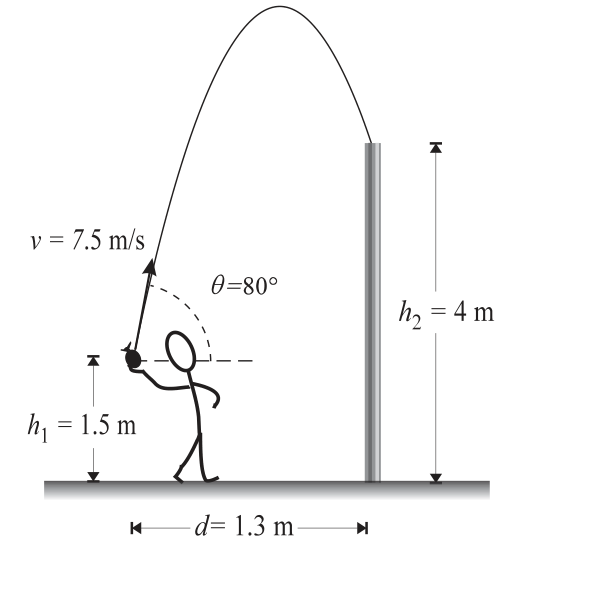
Topic: Order-of-Magnitude Estimation Metodi: Order-of-Magnitude Estimation Competenze: Estimation & Approximation Objects: — Fonte: Testo (PDF) — p.3 Risposta: D · Soluzioni (PDF)
Q1. Which of these objects has a weight of ? A) A pin; B) A coin; C) A liter of water; D) A golf ball; E) A physics student.
Topic: Order-of-Magnitude Estimation Metodi: Order-of-Magnitude Estimation Competenze: Estimation & Approximation Objects: — Fonte: Testo (PDF) — p.3 The Commission has also adopted a proposal for a regulation on the protection of the environment and the environment.
Q2. In figura sono illustrati un oggetto, O, e la sua immagine, I, formata da un dispositivo ottico collocato nel punto X. [L’immagine I è diritta, rimpicciolita, dalla stessa parte dell’oggetto rispetto a X.] Il dispositivo potrebbe essere: A) una lente convergente; B) una lente divergente; C) uno specchio piano; D) uno specchio concavo; E) uno specchio convesso.
p.3 — Oggetto O, immagine I e dispositivo X
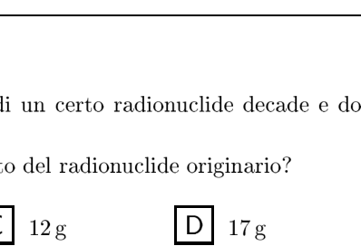
Topic: Geometric Optics Metodi: Ray Tracing Competenze: Physical Reasoning Objects: Lens, Mirror Fonte: Testo (PDF) — p.3 Risposta: B · Soluzioni (PDF)
Q2. An object, O, and its image, I, formed by an optical device placed at point X are shown in Figure 1. [Image I is straight, shortened, from the same part of the object as X.] The device could be: A) a convergent lens; B) a divergent lens; C) a flat mirror; D) a concave mirror; E) a convex mirror.
The following information is provided by the manufacturer:
Topic: Geometric Optics Metodi: Ray Tracing Competenze: Physical Reasoning Objects: Lens, Mirror Fonte: Testo (PDF) — p.3 The Commission has also adopted a number of proposals for the implementation of the European Union’s Strategy for Sustainable Development (ESD) programme.
Q4. Il grafico mostra la massa di tre oggetti diversi, in funzione del modulo del loro peso, su un pianeta X [grafico massa (kg) vs peso (N): punti , , ]. Quanto vale, approssimativamente, l’accelerazione di gravità su quel pianeta? A) ; B) ; C) ; D) ; E) .
p.3 — Grafico massa in funzione del peso
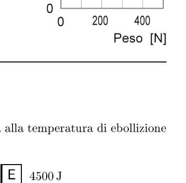
Topic: Newtonian Mechanics Metodi: Graph Linearization Competenze: Diagrammatic Reasoning Objects: Planet Fonte: Testo (PDF) — p.3 Risposta: C · Soluzioni (PDF)
Q4. The graph shows the mass of three different objects, depending on the model of their weight, on a planet X [graph mass (kg) vs weight (N): points , , ]. What is the value of the acceleration of gravity on that planet? A) ; B) ; C) ; D) ; E) .
The mass of the product is shown in the table below.
Topic: Newtonian Mechanics Metodi: Graph Linearization Competenze: Diagrammatic Reasoning Objects: Planet Fonte: Testo (PDF) — p.3 The Commission has also adopted a number of proposals for the implementation of the ‘European Union’s strategy for the protection of the environment.
Q5. Quanto calore è necessario, approssimativamente, per vaporizzare di acqua alla temperatura di ebollizione e alla pressione atmosferica? A) ; B) ; C) ; D) ; E) .
Topic: Thermodynamics Metodi: — Competenze: Estimation & Approximation Objects: — Fonte: Testo (PDF) — p.3 Risposta: E · Soluzioni (PDF)
Q5. How much heat is approximately required to vaporize water at boiling temperature and atmospheric pressure? A) ; B) ; C) ; D) ; E) .
Topic: Thermodynamics Metodi: — Competenze: Estimation & Approximation Objects: — Fonte: Testo (PDF) — p.3 The Commission has also adopted a proposal for a regulation on the protection of the environment and the environment in the Member States.
Q6. Una pallina, inizialmente ferma, viene colpita con una mazza da golf. Il grafico a destra mostra l’andamento temporale dell’intensità della forza applicata dalla mazza alla pallina, durante il colpo. Una seconda pallina, di tipo diverso, ma della stessa struttura e massa della prima, viene colpita in modo da partire con la stessa velocità della prima. Quale, tra i seguenti grafici, può rappresentare l’intensità della forza applicata dalla mazza alla seconda pallina? [Cinque grafici con aree (impulso) 0.3, 0.6, 1.2, 1.2, 2.4 kN·ms; il grafico iniziale aveva area 0.6.]
p.4 — Cinque grafici forza-tempo A-E
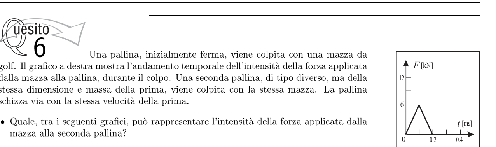
Topic: Conservation of Momentum Metodi: Impulse-Momentum Theorem Competenze: Diagrammatic Reasoning Objects: Ball Fonte: Testo (PDF) — p.3 Risposta: B · Soluzioni (PDF)
Q6. A ball, initially stationary, is hit with a golf club. The graph on the right shows the temporal trend of the intensity of force applied from the bat to the ball, during the shot. A second ball, of a different type but of the same structure and mass as the first, is hit so that it starts at the same speed as the first. Which of the following graphs can represent the intensity of the force applied by the bat to the second ball? [Five graphs with areas (impulse) 0.3, 0.6, 1.2, 1.2, 2.4 kN·ms; the initial graph had area 0.6.]
The following table shows the results of the calculation of the power-to-weight ratio:
Topic: Conservation of Momentum Metodi: Impulse-Momentum Theorem Competenze: Diagrammatic Reasoning Objects: Ball Fonte: Testo (PDF) — p.3 The Commission has also adopted a number of proposals for the implementation of the European Union’s Strategy for Sustainable Development (ESD) programme.
Q7. Due magneti a barra identici sono posizionati come nel disegno a fianco [due barre S–N affiancate; punti A, B, C, D, E]. In quale dei punti indicati il campo magnetico ha la massima intensità? A) A; B) B; C) C; D) D; E) E.
p.4 — Due magneti a barra con punti A-E
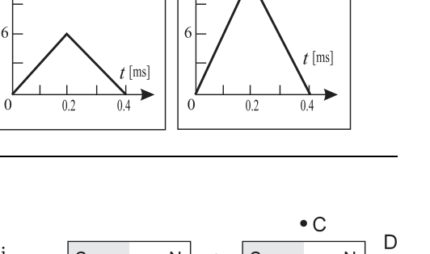
Topic: Magnetism Metodi: — Competenze: Physical Reasoning Objects: Magnet Fonte: Testo (PDF) — p.3 Risposta: B · Soluzioni (PDF)
Q7. Two identical bar magnets are positioned as in the drawing next to [two adjacent SN bars; points A, B, C, D, E]. At which of the points indicated does the magnetic field have the greatest intensity? A) A; B) B; C) C; D) D; E) E.
**p.4 ** Two bar magnets with points A to E
Topic: Magnetism Metodi: — Competenze: Physical Reasoning Objects: Magnet Fonte: Testo (PDF) — p.3 The Commission has also adopted a number of proposals for the implementation of the European Union’s Strategy for Sustainable Development (ESD) programme.
Q8. Una trave uniforme di lunghezza è appoggiata su due sostegni distanti rispettivamente ed dalle estremità [figura]. Qual è il rapporto tra l’intensità delle forze esercitate (sulla trave) rispettivamente dal sostegno di sinistra e da quello di destra? A) ; B) ; C) ; D) ; E) .
p.4 — Trave su due sostegni
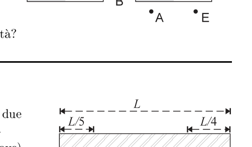
Topic: Rigid Body Statics Metodi: Torque & Angular Momentum Analysis, Free-Body Diagram Competenze: Mathematical Modeling Objects: Beam Fonte: Testo (PDF) — p.3 Risposta: A · Soluzioni (PDF)
Q8. A uniform beam of length shall be supported on two separate supports and respectively from the ends [figure]. What is the ratio between the strength of the forces (on the beam) applied by the left and right support respectively? A) ; B) ; C) ; D) ; E) .
The following table shows the results of the calculation of the total weight of the product:
Topic: Rigid Body Statics Metodi: Torque & Angular Momentum Analysis, Free-Body Diagram Competenze: Mathematical Modeling Objects: Beam Fonte: Testo (PDF) — p.3 The Commission has also adopted a proposal for a regulation on the protection of the environment in the Member States of the European Union.
Q9. Una lente convergente sottile forma un’immagine reale, posta a dalla lente, che è quattro volte più grande della sorgente. Quale, tra quelle proposte, potrebbe essere la distanza focale della lente? A) ; B) ; C) ; D) ; E) .
Topic: Geometric Optics Metodi: Thin Lens & Mirror Equation Competenze: Mathematical Modeling Objects: Lens Fonte: Testo (PDF) — p.3 Risposta: A · Soluzioni (PDF)
Q9. A thin convergent lens forms a real image, set to by the lens, which is four times larger than the source. Which of these proposals could be the focal length of the lens? A) ; B) ; C) ; D) ; E) .
Topic: Geometric Optics Metodi: Thin Lens & Mirror Equation Competenze: Mathematical Modeling Objects: Lens Fonte: Testo (PDF) — p.3 The Commission has also adopted a proposal for a regulation on the protection of the environment in the Member States of the European Union.
Q10. L’accelerazione di gravità sulla Luna è circa un sesto di quella sulla Terra. Se trasportassimo sulla Luna un pendolo semplice che sulla Terra ha un periodo , quale sarebbe il suo periodo? A) ; B) ; C) ; D) ; E) .
Topic: Oscillations & Waves Metodi: Simple Harmonic Motion Analysis Competenze: Physical Reasoning Objects: Pendulum Fonte: Testo (PDF) — p.3 Risposta: C · Soluzioni (PDF)
Q10. The gravitational acceleration on the Moon is about one sixth of that on the Earth. If we took a simple pendulum that on the Earth has period to the Moon, what would its period be? A) ; B) ; C) ; D) ; E) .
Topic: Oscillations & Waves Metodi: Simple Harmonic Motion Analysis Competenze: Physical Reasoning Objects: Pendulum Fonte: Testo (PDF) — p.3 Risposta: C · Soluzioni (PDF)
Q11. Quale dei grafici seguenti rappresenta la relazione tra l’energia cinetica media del moto di agitazione termica delle molecole di un gas perfetto e la sua temperatura assoluta ? [Cinque grafici –: A esponenziale crescente; B decrescente; C retta per l’origine; D costante; E verticale.]
p.5 — Cinque grafici energia cinetica-temperatura A-E
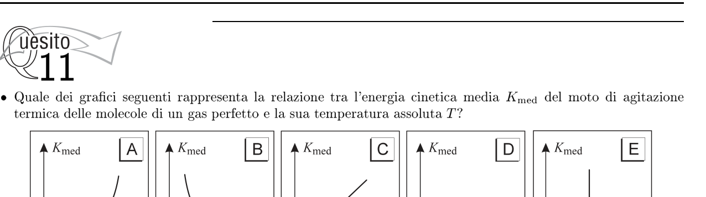
Topic: Kinetic Theory Metodi: — Competenze: Diagrammatic Reasoning Objects: Gas Fonte: Testo (PDF) — p.3 Risposta: C · Soluzioni (PDF)
Q11. Which of the following graphs represents the relationship between the mean kinetic energy of the thermal agitation motion of molecules of a perfect gas and its absolute temperature ? [Five graphs K_\text{med}$$T: A is increasing exponentially; B is decreasing; C is straight for origin; D is constant; E is vertical.]
The following table shows the number of cycles in the cycle:
Topic: Kinetic Theory Metodi: — Competenze: Diagrammatic Reasoning Objects: Gas Fonte: Testo (PDF) — p.3 The Commission has also adopted a number of proposals for the implementation of the ‘European Union’s strategy for the protection of the environment.
Q12. Un sistema costituito da una miscela di acqua e ghiaccio viene riscaldato. Quale dei grafici seguenti rappresenta correttamente la relazione tra la temperatura del sistema e il calore fornito? [Cinque grafici –, A–E.]
p.5 — Cinque grafici temperatura-calore A-E
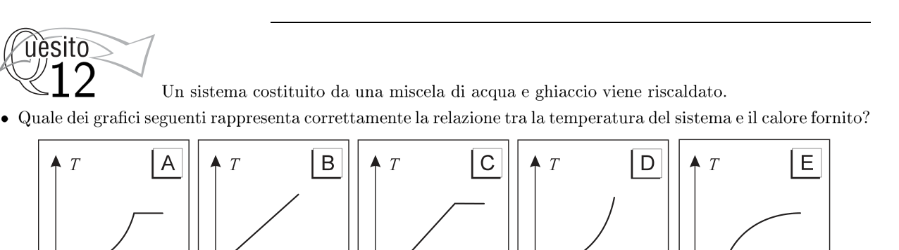
Topic: Thermodynamics Metodi: — Competenze: Diagrammatic Reasoning Objects: — Fonte: Testo (PDF) — p.3 Risposta: C · Soluzioni (PDF)
Q12. A system consisting of a mixture of water and ice is heated. Which of the following graphs correctly represents the relationship between system temperature and heat supplied? [Cinque grafici –, A–E.]
p.5 — Cinque grafici temperatura-calore A-E
Topic: Thermodynamics Metodi: — Competenze: Diagrammatic Reasoning Objects: — Fonte: Testo (PDF) — p.3 Risposta: C · Soluzioni (PDF)
Q13. L’insieme dei due resistori e nel circuito mostrato in figura ha una resistenza equivalente di [ e in parallelo su un generatore]. Fra i seguenti, quale può essere un valore possibile della resistenza di ? A) ; B) ; C) ; D) ; E) .
p.5 — Circuito con R1 e R2 in parallelo
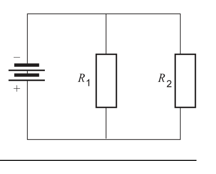
Topic: Circuits Metodi: Equivalent Circuit Reduction Competenze: Physical Reasoning Objects: Resistor, Battery Fonte: Testo (PDF) — p.3 Risposta: E · Soluzioni (PDF)
The sum of the two resistors and in the circuit shown in the figure has a resistance equivalent to [ and in parallel on a generator]. For the following, what is a possible value of the resistance of ? A) ; B) ; C) ; D) ; E) .
p.5 Circuit with R1 and R2 in parallel
Topic: Circuits Metodi: Equivalent Circuit Reduction Competenze: Physical Reasoning Objects: Resistor, Battery Fonte: Testo (PDF) — p.3 The Commission has also adopted a proposal for a regulation on the protection of the environment and the environment in the Member States.
Q14. Un filo conduttore si sta muovendo in direzione perpendicolare ad un campo magnetico , come rappresentato in figura, cosicché tra i suoi estremi si stabilisce una d.d.p. indotta. Se l’intensità del campo magnetico viene raddoppiata, allora la differenza di potenziale elettrico tra gli estremi del conduttore… A) …diventa un quarto; B) …si dimezza; C) …rimane la stessa; D) …raddoppia; E) …quadruplica.
p.5 — Conduttore in moto nel campo magnetico
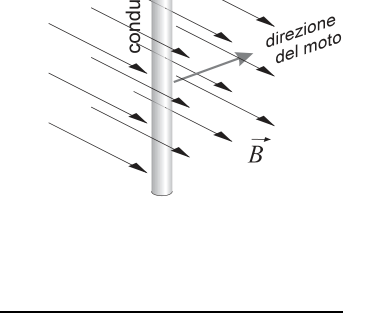
Topic: Electromagnetic Induction Metodi: Faraday’s Law of Induction Competenze: Physical Reasoning Objects: Wire Fonte: Testo (PDF) — p.3 Risposta: D · Soluzioni (PDF)
Q14. A conductive wire is moving perpendicular to a magnetic field , as shown in Figure 1, so that a d.d.p. is established between its ends. It’s induced. If the intensity of the magnetic field is doubled, then the difference in electrical potential between the conductor extremes… A) … becomes a quarter; B) … halves; C) … remains the same; D) … doubles; E) …quadruples.
**p.5 ** Conductor in motion in the magnetic field
Topic: Electromagnetic Induction Metodi: Faraday’s Law of Induction Competenze: Physical Reasoning Objects: Wire Fonte: Testo (PDF) — p.3 The Commission has also adopted a proposal for a regulation on the protection of the environment and the environment.
Q15. Una lampadina in una stanza buia viene accesa e posta davanti ad un fotodiodo, a di distanza. La lampadina può essere considerata come una sorgente puntiforme. La corrente che attraversa il fotodiodo, in questa situazione, è . Si riporta in un grafico l’andamento della corrente () nel fotodiodo in funzione della sua distanza () dalla lampadina. Quale dei seguenti grafici è quello ottenuto sperimentalmente? [Cinque grafici –, A–E; il grafico corretto soddisfa .]
p.6 — Cinque grafici corrente-distanza A-E
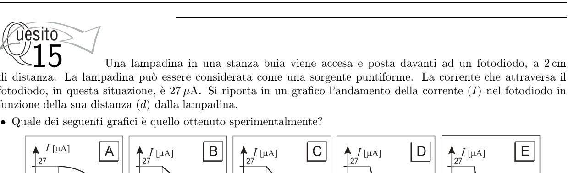
Topic: Geometric Optics Metodi: — Competenze: Diagrammatic Reasoning, Physical Reasoning Objects: — Fonte: Testo (PDF) — p.3 Risposta: D · Soluzioni (PDF)
Q15. A light bulb in a dark room is lit and placed in front of a photodiode, away. The light bulb can be considered as a pointed source. The current passing through the photodiode in this situation is . The current () in the photodiode is recorded in a graph according to its distance () from the lamp. Which of the following graphs is the experimental one? [Five graphs I$$d, AE; the correct graph satisfies .]
The following table shows the current and distance graphs:
Topic: Geometric Optics Metodi: — Competenze: Diagrammatic Reasoning, Physical Reasoning Objects: — Fonte: Testo (PDF) — p.3 The Commission has also adopted a proposal for a regulation on the protection of the environment and the environment.
Q16. Un uomo sta spingendo un passeggino. Rispetto all’intensità della forza esercitata dall’uomo sul passeggino, l’intensità della forza esercitata dal passeggino sull’uomo è… A) …sempre zero; B) …sempre piccola, ma maggiore di zero; C) …sempre la stessa; D) …sempre maggiore; E) …la stessa solo se la velocità del passeggino è costante.
Topic: Newtonian Mechanics Metodi: — Competenze: Physical Reasoning Objects: — Fonte: Testo (PDF) — p.3 Risposta: C · Soluzioni (PDF)
A man is pushing a stroller. Compared to the intensity of the force exerted by man on the passenger, the intensity of the force exerted by the passenger on man is… A) … always zero; B) … always small but greater than zero; C) … always the same; D) … always greater; E) … only the same if the speed of the passenger is constant.
Topic: Newtonian Mechanics Metodi: — Competenze: Physical Reasoning Objects: — Fonte: Testo (PDF) — p.3 The Commission has also adopted a number of proposals for the implementation of the ‘European Union’s strategy for the prevention of trafficking in human beings’.
Q17. Un razzo sale verticalmente verso l’alto con accelerazione per prima che il suo motore si spenga. Il razzo continua poi a muoversi sotto la sola azione del suo peso. Qual è la massima altezza raggiunta dal razzo? (Si trascuri la resistenza dell’aria.) A) ; B) ; C) ; D) ; E) .
Topic: Newtonian Mechanics Metodi: Kinematic Equations Competenze: Mathematical Modeling Objects: Projectile Fonte: Testo (PDF) — p.3 Risposta: C · Soluzioni (PDF)
A rocket rises vertically upwards with acceleration for before its engine is shut down. The rocket then continues to move under the action of its weight alone. What is the maximum height the rocket can reach? (Air resistance is neglected.) A) ; B) ; C) ; D) ; E) .
Topic: Newtonian Mechanics Metodi: Kinematic Equations Competenze: Mathematical Modeling Objects: Projectile Fonte: Testo (PDF) — p.3 The Commission has also adopted a number of proposals for the implementation of the ‘European Union’s strategy for the prevention of trafficking in human beings’.
Q18. Tarzan vuole raggiungere Jane che si trova sull’altra sponda di un fiume esattamente di fronte a lui. Si getta nell’acqua e nuota a . Stima di dover nuotare controcorrente a come in figura. Nuotando in questo modo, raggiunge l’altra sponda in minuti. Quanto è largo il fiume? A) ; B) ; C) ; D) ; E) .
p.6 — Tarzan attraversa il fiume, vettori velocita
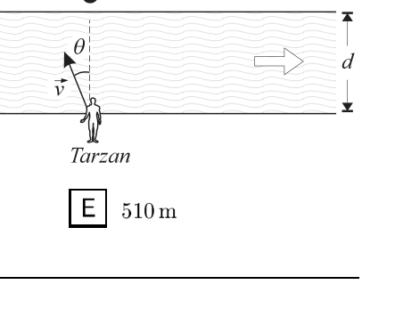
Topic: Newtonian Mechanics Metodi: Vector Decomposition, Kinematic Equations Competenze: Mathematical Modeling Objects: — Fonte: Testo (PDF) — p.3 Risposta: B · Soluzioni (PDF)
Tarzan wants to reach Jane who is on the other side of a river right in front of him. Throw yourself into the water and swim at . Estimates that you will have to swim countercurrent at as shown in Figure 1. Swimming this way, he reaches the other shore in minutes. How wide is the river? A) ; B) ; C) ; D) ; E) .
The river is crossed by Tarzan, fast-moving vehicles.
Topic: Newtonian Mechanics Metodi: Vector Decomposition, Kinematic Equations Competenze: Mathematical Modeling Objects: — Fonte: Testo (PDF) — p.3 The Commission has also adopted a proposal for a Regulation (EC) laying down the rules for the implementation of the common fisheries policy.
Q19. Un blocco di scivola senza attrito su un piano orizzontale alla velocità di fino ad urtare centralmente un secondo blocco, fermo, di massa . Dopo l’urto il primo blocco torna indietro a , mentre il secondo procede in avanti – sulla stessa retta – a . Quale riga della tabella è corretta? (colonne: Q.d.M. del sistema / Energia cin. del sistema / Tipo di urto) A) si conserva / si conserva / elastico; B) si conserva / non si conserva / anelastico; C) si conserva / non si conserva / elastico; D) non si conserva / non si conserva / anelastico; E) non si conserva / non si conserva / elastico.
Topic: Conservation of Momentum Metodi: Conservation of Momentum, Conservation of Energy Competenze: Physical Reasoning Objects: Block Fonte: Testo (PDF) — p.3 Risposta: B · Soluzioni (PDF)
Q19. A block of slides without friction on a horizontal plane at a rate of until a second block of mass is centrally impacted. After the impact the first block goes back to , while the second one goes forward in the same direction to . Which line of the table is correct? The Commission shall adopt implementing acts in accordance with Article 21 of Regulation (EC) No 1224/2009. The system / Energy kin. The system is designed to be used in the event of a collision.
Topic: Conservation of Momentum Metodi: Conservation of Momentum, Conservation of Energy Competenze: Physical Reasoning Objects: Block Fonte: Testo (PDF) — p.3 The Commission has also adopted a proposal for a Regulation (EC) laying down the rules for the implementation of the common fisheries policy.
Q20. Una zona di spazio vuoto è occupata dal campo elettrico generato da due piastre parallele uniformemente cariche. Un protone “p” e un elettrone “e” vengono lasciati andare nello stesso istante, in prossimità delle due piastre, come si vede in figura. Le due particelle accelerano da parti opposte, rimanendo abbastanza lontane da non risentire l’una della presenza dell’altra. Una volta che le particelle hanno completato il loro moto e stanno per raggiungere la piastra opposta, hanno velocità ed ed energia cinetica ed . Quali relazioni tra le grandezze sono corrette? (coppie Velocità / Energia cinetica) A) / ; B) / ; C) / ; D) / ; E) / .
p.7 — Protone ed elettrone tra due piastre cariche
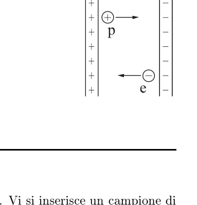
Topic: Electrostatics Metodi: Energy Conservation Method Competenze: Physical Reasoning Objects: Capacitor, Electron, Point Charge Fonte: Testo (PDF) — p.3 Risposta: E · Soluzioni (PDF)
Q20. An area of empty space is occupied by the electric field generated by two parallel plates with uniform charges. A proton “p” and an electron “e” are released at the same time, near the two plates, as you can see in the figure. The two particles accelerate from opposite sides, remaining far enough away that one does not feel the presence of the other. Once the particles have completed their motion and are about to reach the opposite plate, they have speeds and and kinetic energy and . What relationships between magnitudes are correct? (coppie Velocità / Energia cinetica) A) / ; B) / ; C) / ; D) / ; E) / .
**p.7 ** Protons and electrons between two charge plates
Topic: Electrostatics Metodi: Energy Conservation Method Competenze: Physical Reasoning Objects: Capacitor, Electron, Point Charge Fonte: Testo (PDF) — p.3 Risposta: E · Soluzioni (PDF)
Q21. In un recipiente aperto all’aria è in ebollizione di acqua. Vi si inserisce un campione di di piombo a . Per effetto di questo inserimento, come cambiano le temperature delle due sostanze? A) La temperatura dell’acqua diminuisce e quella del piombo rimane invariata; B) La temperatura dell’acqua aumenta e quella del piombo rimane invariata; C) La temperatura dell’acqua rimane invariata e quella del piombo diminuisce; D) La temperatura dell’acqua aumenta e quella del piombo diminuisce; E) La temperatura dell’acqua rimane invariata e quella del piombo aumenta.
Topic: Thermodynamics Metodi: — Competenze: Physical Reasoning Objects: — Fonte: Testo (PDF) — p.3 Risposta: C · Soluzioni (PDF)
Q21. In an open container, boil of water. A sample of lead at shall be inserted. As a result of this insertion, how do the two substances change their temperatures? (a) The water temperature decreases and that of the lead remains unchanged; (b) The water temperature increases and that of the lead remains unchanged; (c) The water temperature remains unchanged and that of the lead decreases; (d) The water temperature increases and that of the lead decreases; (e) The water temperature remains unchanged and that of the lead increases.
Topic: Thermodynamics Metodi: — Competenze: Physical Reasoning Objects: — Fonte: Testo (PDF) — p.3 The Commission has also adopted a number of proposals for the implementation of the ‘European Union’s strategy for the prevention of trafficking in human beings’.
Q22. Un satellite artificiale, di massa molto piccola e trascurabile rispetto a quella del pianeta intorno al quale sta ruotando, viene osservato da un astronomo. Vengono misurate la minima e la massima distanza del satellite dal pianeta e la massima velocità orbitale del satellite. Quale delle seguenti quantità non può essere ottenuta a partire dai dati misurati? A) La massa del satellite; B) La massa del pianeta; C) La velocità orbitale minima del satellite; D) Il semiasse maggiore dell’orbita del satellite; E) Il periodo dell’orbita del satellite.
Topic: Gravitation Metodi: Kepler’s Laws, Newton’s Law of Gravitation Competenze: Physical Reasoning Objects: Satellite, Planet Fonte: Testo (PDF) — p.3 Risposta: A · Soluzioni (PDF)
A man-made satellite, of very small and negligible mass compared to that of the planet around which it is orbiting, is observed by an astronomer. The minimum and maximum distance of the satellite from the planet and the maximum orbital speed of the satellite are measured. Which of the following ** cannot be obtained from the measured data? (a) The mass of the satellite; (b) The mass of the planet; (c) The minimum orbital speed of the satellite; (d) The major half-axis of the satellite’s orbit; (e) The period of the satellite’s orbit.
Topic: Gravitation Metodi: Kepler’s Laws, Newton’s Law of Gravitation Competenze: Physical Reasoning Objects: Satellite, Planet Fonte: Testo (PDF) — p.3 The Commission has also adopted a proposal for a regulation on the protection of the environment in the Member States of the European Union.
Q23. Un sottile strato di un materiale trasparente di spessore e indice di rifrazione ricopre la lente di un occhiale di indice di rifrazione , come mostrato in figura [ aria, strato, vetro]. Quale dei seguenti spessori rende l’incidenza quasi perpendicolare meno visibile la luce che incide quasi perpendicolarmente (cioè la luce non viene riflessa)? Si suppone che la lunghezza d’onda in aria. A) ; B) ; C) ; D) ; E) .
p.8 — Strato trasparente su lente, indici di rifrazione
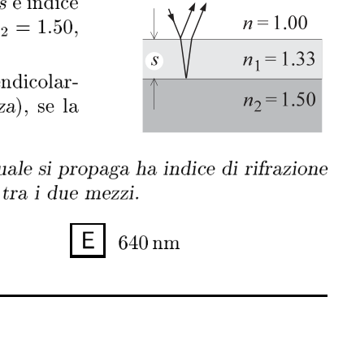
Topic: Wave Optics Metodi: Interference & Diffraction Analysis Competenze: Mathematical Modeling Objects: Lens Fonte: Testo (PDF) — p.3 Risposta: C · Soluzioni (PDF)
Q23. A thin layer of a transparent material of thickness and refractive index covers the lens of a refractive index eyepiece, as shown in figure [ air, layer, glass]. Which of the following thicknesses makes the near-perpendicular incidence less visible than light that hits almost perpendicularly (i.e. light is not reflected)? The wavelength in the air is assumed. A) ; B) ; C) ; D) ; E) .
The following table shows the results of the calculation of the total value of the samples:
Topic: Wave Optics Metodi: Interference & Diffraction Analysis Competenze: Mathematical Modeling Objects: Lens Fonte: Testo (PDF) — p.3 The Commission has also adopted a number of proposals for the implementation of the ‘European Union’s strategy for the protection of the environment.
Q24. Una locomotiva a vapore monta ruote aventi raggio di . La locomotiva parte da ferma e raggiunge una velocità in ; in tale intervallo di tempo la velocità della locomotiva è . Quanto vale l’accelerazione angolare delle ruote nella fase di accelerazione? A) ; B) ; C) ; D) ; E) .
Topic: Rotational Dynamics Metodi: Kinematic Equations Competenze: Mathematical Modeling Objects: Wheel Fonte: Testo (PDF) — p.3 Risposta: B · Soluzioni (PDF)
Q24. A steam locomotive shall be fitted with wheels with a radius of . The locomotive shall start at a stop and reach a speed in ; in this time interval the locomotive speed shall be . What is the angular acceleration of the wheels in the acceleration phase? A) ; B) ; C) ; D) ; E) .
Topic: Rotational Dynamics Metodi: Kinematic Equations Competenze: Mathematical Modeling Objects: Wheel Fonte: Testo (PDF) — p.3 The Commission has also adopted a proposal for a Regulation (EC) laying down the rules for the implementation of the common fisheries policy.
Q25. Nel circuito in figura, la batteria ha la resistenza interna nulla. L’interruttore viene chiuso e si aspetta che il processo di carica del condensatore abbia termine [batteria , , , , condensatore ]. In questa situazione, qual è la tensione ai capi del condensatore? A) ; B) ; C) ; D) ; E) .
p.8 — Circuito con batteria, resistori e condensatore
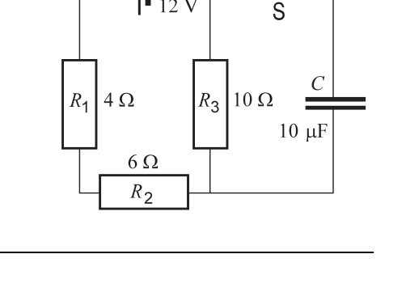
Topic: Circuits Metodi: Kirchhoff’s Laws, Equivalent Circuit Reduction Competenze: Physical Reasoning Objects: Battery, Resistor, Capacitor, Switch Fonte: Testo (PDF) — p.3 Risposta: C · Soluzioni (PDF)
In the circuit shown, the battery has zero internal resistance. The switch is closed and the capacitor charging process is expected to be completed [battery , , , , capacitor ]. In this situation, what is the tension on the capacitor heads? A) ; B) ; C) ; D) ; E) .
p.8 Battery, resistor and capacitor circuit
Topic: Circuits Metodi: Kirchhoff’s Laws, Equivalent Circuit Reduction Competenze: Physical Reasoning Objects: Battery, Resistor, Capacitor, Switch Fonte: Testo (PDF) — p.3 The Commission has also adopted a number of proposals for the implementation of the ‘European Union’s strategy for the protection of the environment.
Q26. Due oggetti sono collegati tra loro mediante una corda di massa trascurabile avvolta intorno ad una puleggia anch’essa di massa trascurabile, come mostrato in figura [masse e ]. Quanto vale l’accelerazione dell’oggetto più pesante? (Trascurare la resistenza dell’aria.) A) ; B) ; C) ; D) ; E) .
p.9 — Puleggia con masse 3 kg e 5 kg
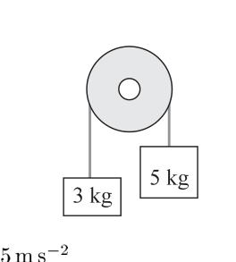
Topic: Newtonian Mechanics Metodi: Free-Body Diagram, Conservation Laws Competenze: Mathematical Modeling Objects: String, Pulley Fonte: Testo (PDF) — p.3 Risposta: E · Soluzioni (PDF)
Q26. Two objects are connected by a negligible mass rope wrapped around a net of negligible mass as shown in [masses and ]. How much is the acceleration of the heaviest object worth? (Cross the resistance of the air.) A) ; B) ; C) ; D) ; E) .
p.9 Cleaning with masses of 3 kg and 5 kg
Topic: Newtonian Mechanics Metodi: Free-Body Diagram, Conservation Laws Competenze: Mathematical Modeling Objects: String, Pulley Fonte: Testo (PDF) — p.3 The Commission has also adopted a proposal for a regulation on the protection of the environment and the environment in the Member States.
Q27. Un ascensore sta scendendo a . Quando è giunto in prossimità del piano terra, vengono azionati i freni e l’ascensore rallenta di ogni secondo fino a fermarsi. A che altezza da terra vengono azionati i freni? A) ; B) ; C) ; D) ; E) .
Topic: Newtonian Mechanics Metodi: Kinematic Equations Competenze: Mathematical Modeling Objects: — Fonte: Testo (PDF) — p.3 Risposta: A · Soluzioni (PDF)
Q27. Un ascensore sta scendendo a . When it is close to the ground level, the brakes are actuated and the lift slows down by every second until it stops. At what height from the ground are the brakes actuated? A) ; B) ; C) ; D) ; E) .
Topic: Newtonian Mechanics Metodi: Kinematic Equations Competenze: Mathematical Modeling Objects: — Fonte: Testo (PDF) — p.3 Risposta: A · Soluzioni (PDF)
Q28. Carlo lancia un sacchetto di sabbia in cima a un muro alto posto davanti a lui. Il sacchetto sta a mano di Carlo ad un’altezza di da terra, come è schematizzato in figura. La velocità di lancio è , l’angolo con l’orizzontale è , l’attrito con l’aria è trascurabile. Quanto dura il volo del sacchetto di sabbia? A) ; B) ; C) ; D) ; E) .
p.9 — Lancio del sacchetto oltre il muro
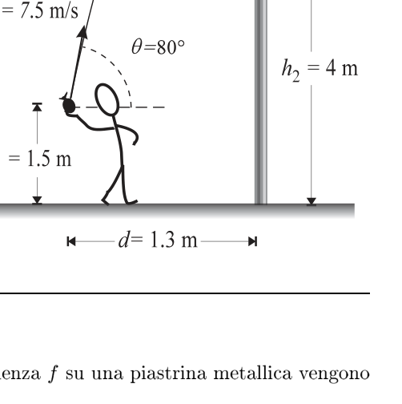
Topic: Newtonian Mechanics Metodi: Kinematic Equations, Vector Decomposition Competenze: Mathematical Modeling Objects: Projectile Fonte: Testo (PDF) — p.3 Risposta: C · Soluzioni (PDF)
Q28. Carlo lancia un sacchetto di sabbia in cima a un muro alto posto davanti a lui. The bag is in Carlo’s hand at a height of from the ground, as outlined in the figure. The launch speed is , the angle with the horizontal is , the friction with the air is negligible. How long does a sandbag take to fly? A) ; B) ; C) ; D) ; E) .
p.9 — Lancio del sacchetto oltre il muro
Topic: Newtonian Mechanics Metodi: Kinematic Equations, Vector Decomposition Competenze: Mathematical Modeling Objects: Projectile Fonte: Testo (PDF) — p.3 Risposta: C · Soluzioni (PDF)
Q31. Un condensatore a facce piane parallele viene caricato adoperando una batteria da . In assenza di dielettrico tra le armature, il condensatore ha una capacità di . La batteria viene staccata e lo spazio fra le armature viene riempito di vetro Pyrex avente costante dielettrica relativa . Di quanto varia l’energia immagazzinata nel condensatore? A) ; B) ; C) ; D) ; E) .
Topic: Electrostatics Metodi: Electric Potential Method Competenze: Mathematical Modeling Objects: Capacitor, Battery Fonte: Testo (PDF) — p.3 Risposta: B · Soluzioni (PDF)
Q31. A parallel flat-faced capacitor is charged using a battery from . In the absence of dielectric between the frames, the capacitor has a capacity of . The battery is disconnected and the space between the frames is filled with Pyrex glass with a relative dielectric constant . How much energy does the capacitor store? A) ; B) ; C) ; D) ; E) .
Topic: Electrostatics Metodi: Electric Potential Method Competenze: Mathematical Modeling Objects: Capacitor, Battery Fonte: Testo (PDF) — p.3 The Commission has also adopted a number of proposals for the implementation of the European Union’s Strategy for Sustainable Development (ESD) programme.
Q32. Un veicolo si muove lungo una strada diritta. Nei grafici seguenti sono mostrate la velocità e l’accelerazione del veicolo in funzione del tempo. Quale coppia di grafici potrebbe correttamente rappresentare il moto del veicolo? [Cinque coppie di grafici – e –, A–E.]
p.10 — Cinque coppie di grafici v-t e a-t A-E
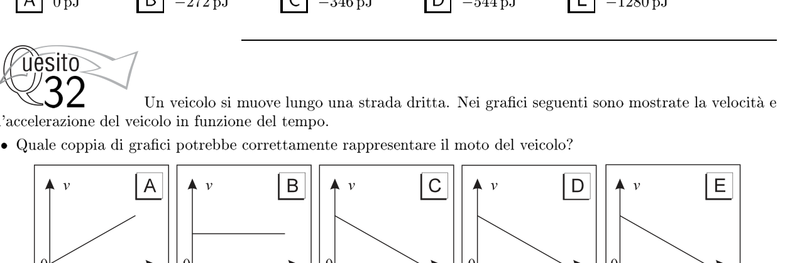
Topic: Newtonian Mechanics Metodi: — Competenze: Diagrammatic Reasoning Objects: — Fonte: Testo (PDF) — p.3 Risposta: E · Soluzioni (PDF)
**Q32. ** A vehicle is moving along a straight road. The following graphs show the speed and acceleration of the vehicle in relation to the time. What pair of graphs could properly represent the vehicle’s motion? [Cinque coppie di grafici – e –, A–E.]
**p.10 ** Five pairs of graphs v-t and a-t A-E
Topic: Newtonian Mechanics Metodi: — Competenze: Diagrammatic Reasoning Objects: — Fonte: Testo (PDF) — p.3 Risposta: E · Soluzioni (PDF)
Q33. Una sorgente di microonde nel punto O emette onde aventi lunghezza d’onda di . L’onda si riflette su una superficie metallica e – coincide l’onda riflessa è in opposizione di fase rispetto a quella diretta. Nel punto O in figura, dista da O , si osserva un’interferenza costruttiva. Quale di questi valori potrebbe corrispondere alla lunghezza del percorso OYX? A) ; B) ; C) ; D) ; E) .
p.10 — Sorgente microonde O e punto O primo
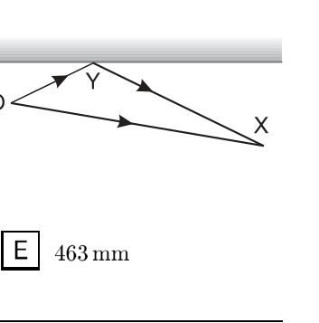
Topic: Wave Optics Metodi: Interference & Diffraction Analysis Competenze: Mathematical Modeling Objects: — Fonte: Testo (PDF) — p.3 Risposta: C · Soluzioni (PDF)
Q33. A microwave source in point O emits waves with a wavelength of . The wave is reflected on a metal surface and coincides the reflected wave is in phase opposition to the direct one. In the O point in the figure, away from O , a constructive interference is observed. Which of these values could correspond to the length of the OYX path? A) ; B) ; C) ; D) ; E) .
**p.10 ** Microwave source O and point O first
Topic: Wave Optics Metodi: Interference & Diffraction Analysis Competenze: Mathematical Modeling Objects: — Fonte: Testo (PDF) — p.3 The Commission has also adopted a number of proposals for the implementation of the ‘European Union’s strategy for the protection of the environment.
Q34. Una forza di allunga una molla di . Quanto vale l’energia potenziale immagazzinata nella molla allungata? A) ; B) ; C) ; D) ; E) .
Topic: Elasticity & Materials Metodi: Hooke’s Law, Energy Conservation Method Competenze: Mathematical Modeling Objects: Spring Fonte: Testo (PDF) — p.3 Risposta: B · Soluzioni (PDF)
The force of lengthens a spring of . How much is the potential energy stored in the elongated spring worth? A) ; B) ; C) ; D) ; E) .
Topic: Elasticity & Materials Metodi: Hooke’s Law, Energy Conservation Method Competenze: Mathematical Modeling Objects: Spring Fonte: Testo (PDF) — p.3 The Commission has also adopted a number of proposals for the implementation of the European Union’s Strategy for Sustainable Development (ESD) programme.
Q35. La figura rappresenta un raggio di luce che dall’aria passa in un liquido [angolo di incidenza in aria dalla normale, angolo di rifrazione nel liquido ]. Sapendo che l’indice di rifrazione dell’aria è, con buona approssimazione, , quale vale l’indice di rifrazione del liquido in esame? A) ; B) ; C) ; D) ; E) .
p.11 — Rifrazione di un raggio aria-liquido
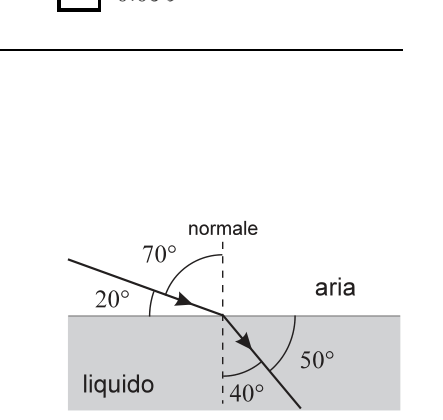
Topic: Geometric Optics Metodi: Snell’s Law Competenze: Mathematical Modeling Objects: — Fonte: Testo (PDF) — p.3 Risposta: D · Soluzioni (PDF)
Q35. The figure represents a beam of light passing from air into a liquid [air angle of incidence from normal, refractive angle in the liquid ]. Knowing that the air refractive index is, with a good approximation, , what is the refractive index of the liquid under examination? A) ; B) ; C) ; D) ; E) .
The following is the list of the air-liquid beam refraction:
Topic: Geometric Optics Metodi: Snell’s Law Competenze: Mathematical Modeling Objects: — Fonte: Testo (PDF) — p.3 The Commission has also adopted a proposal for a regulation on the protection of the environment and the environment.
Q36. In un motore Diesel il pistone comprime nel cilindro la miscela aria-gasolio e tale miscela si riscalda fino a provocare l’autocombustione. Qual è il processo che provoca questo riscaldamento? A) Entra calore dall’ambiente esterno; B) Viene espulso del calore con i gas di scarico; C) I gas compiono lavoro sull’esterno; D) Il pistone compie lavoro sui gas all’interno; E) Il riscaldamento è provocato dall’attrito fra pistone e cilindro.
Topic: Thermodynamics Metodi: First Law of Thermodynamics Competenze: Physical Reasoning Objects: Piston, Cylinder, Gas Fonte: Testo (PDF) — p.3 Risposta: D · Soluzioni (PDF)
In a diesel engine, the piston compresses the air-gas mixture into the cylinder and the mixture is heated until self-combustion occurs. What is the process that causes this warming? (a) Heat enters the external environment; (b) It is expelled from the heat by the exhaust gases; (c) the gases work on the outside; (d) the piston works on the gases inside; (e) the heating is caused by friction between the piston and the cylinder.
Topic: Thermodynamics Metodi: First Law of Thermodynamics Competenze: Physical Reasoning Objects: Piston, Cylinder, Gas Fonte: Testo (PDF) — p.3 The Commission has also adopted a proposal for a regulation on the protection of the environment and the environment.
Q37. Una studentessa esce di casa e inizia a camminare a velocità costante. Dopo un certo tempo si ferma per un po’ e successivamente riprende a camminare con una velocità maggiore di quella che aveva precedentemente. Improvvisamente torna indietro e si incammina molto velocemente verso casa. Quale dei seguenti grafici rappresenta meglio la sua posizione in funzione del tempo? [Cinque grafici –, A–E.]
p.11 — Cinque grafici del moto A-E
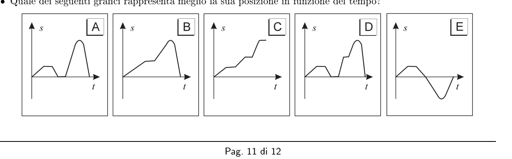
Topic: Newtonian Mechanics Metodi: — Competenze: Diagrammatic Reasoning Objects: — Fonte: Testo (PDF) — p.3 Risposta: B · Soluzioni (PDF)
Q37. Una studentessa esce di casa e inizia a camminare a velocità costante. After a while, he stops for a while and then starts walking again at a faster pace than he had before. Suddenly he comes back and walks very fast toward home. Which of the following graphs best represents its position with respect to time? [Cinque grafici –, A–E.]
p.11 — Cinque grafici del moto A-E
Topic: Newtonian Mechanics Metodi: — Competenze: Diagrammatic Reasoning Objects: — Fonte: Testo (PDF) — p.3 Risposta: B · Soluzioni (PDF)
Q38. La macchina X è stata progettata in modo che la parte frontale possa schiacciarsi più facilmente rispetto alla macchina Y. Una seconda macchina, Y, ha uguale massa ma non è dotata dell’attenuatore d’urto. Per studiare la sicurezza delle due macchine si effettua un crash-test, lanciandole con la stessa velocità contro due muri identici. Quali delle seguenti affermazioni sono vere? 1 – La forza media sulla macchina X è minore di quella sulla macchina Y; 2 – Il tempo impiegato a fermarsi della macchina X è maggiore che per la macchina Y; 3 – La variazione di quantità di moto per la macchina X è minore che per la macchina Y. A) Solo la 1; B) La 1 e la 2; C) La 1 e la 3; D) La 2 e la 3; E) Tutte e tre.
Topic: Conservation of Momentum Metodi: Impulse-Momentum Theorem Competenze: Physical Reasoning Objects: — Fonte: Testo (PDF) — p.3 Risposta: B · Soluzioni (PDF)
**Q38. ** The X machine is designed so that the front part can be crushed more easily than the Y machine. A second machine, Y, has the same mass but is not equipped with the impact attenuator. To study the safety of the two machines, a crash test is performed, launching them at the same speed against two identical walls. Which of the following statements is true? 1 The mean force on machine X is less than on machine Y; 2 The time taken to stop machine X is greater than for machine Y; 3 The change in the amount of motion for machine X is less than for machine Y. (a) Only 1; (b) 1 and 2; (c) 1 and 3; (d) 2 and 3; (e) All three.
Topic: Conservation of Momentum Metodi: Impulse-Momentum Theorem Competenze: Physical Reasoning Objects: — Fonte: Testo (PDF) — p.3 The Commission has also adopted a proposal for a regulation on the protection of the environment and the environment.
Q39. In quale modo un aumento della pressione al di sopra di quella atmosferica modifica la temperatura di ebollizione dell’acqua e quella di fusione del ghiaccio? A) La temperatura di ebollizione aumenta e quella di fusione aumenta; B) La temperatura di ebollizione aumenta e quella di fusione diminuisce; C) La temperatura di ebollizione diminuisce e quella di fusione aumenta; D) La temperatura di ebollizione diminuisce e quella di fusione diminuisce; E) La temperatura di ebollizione diminuisce e quella di fusione rimane invariata.
Topic: Thermodynamics Metodi: — Competenze: Physical Reasoning Objects: — Fonte: Testo (PDF) — p.3 Risposta: B · Soluzioni (PDF)
How does an increase in pressure above atmospheric pressure change the boiling temperature of water and the melting temperature of ice? (a) The boiling point increases and the melting point increases; (b) The boiling point increases and the melting point decreases; (c) The boiling point decreases and the melting point increases; (d) The boiling point decreases and the melting point decreases; (e) The boiling point decreases and the melting point remains unchanged.
Topic: Thermodynamics Metodi: — Competenze: Physical Reasoning Objects: — Fonte: Testo (PDF) — p.3 The Commission has also adopted a proposal for a regulation on the protection of the environment and the environment.
Q40. Sulle strade ghiacciate si sparge spesso della sabbia. Si può pensare che le possibili ragioni di questo fatto siano per la sabbia… 1 – …impedisce il raffreddamento del ghiaccio; 2 – …aumenta il coefficiente d’attrito fra gli pneumatici e la strada; 3 – …aumenta la forza normale che la strada esercita sull’automobile. Fra queste ipotesi sono vere… A) Solo la 1; B) Solo la 2; C) Solo la 3; D) La 1 e la 3; E) La 2 e la 3.
Topic: Newtonian Mechanics Metodi: — Competenze: Physical Reasoning Objects: — Fonte: Testo (PDF) — p.3 Risposta: B · Soluzioni (PDF)
On icy roads there is often sand. You might think the possible reasons for this are the sand… 1 … prevents the ice from cooling; 2 … increases the friction coefficient between the tires and the road; 3 … increases the normal force that the road exert on the car. Among these assumptions, they are true. (a) Only 1; (b) Only 2; (c) Only 3; (d) Only 1 and 3; (e) Only 2 and 3.
Topic: Newtonian Mechanics Metodi: — Competenze: Physical Reasoning Objects: — Fonte: Testo (PDF) — p.3 The Commission has also adopted a proposal for a regulation on the protection of the environment and the environment.